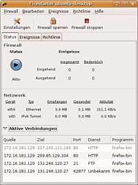
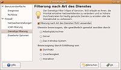

Firestarter
Archivierte Anleitung
Dieser Artikel wurde archiviert, da er - oder Teile daraus - nur noch unter einer älteren Ubuntu-Version nutzbar ist. Diese Anleitung wird vom Wiki-Team weder auf Richtigkeit überprüft noch anderweitig gepflegt. Zusätzlich wurde der Artikel für weitere Änderungen gesperrt.
Hinweis:
Desktop-Rechner benötigen in den seltensten Fällen eine Firewall. Wer von Windows her gewohnt ist, eine Personal Firewall einzusetzen, sollte den Artikel Personal Firewalls lesen, bevor er sich für die vermutlich überflüssige Installation einer Firewall entscheidet.
Zum Verständnis dieses Artikels sind folgende Seiten hilfreich:
Die einfachste Art, eine Firewall für Desktop-Rechner zu konfigurieren, stellt Firestarter  dar. Firestarter selber ist keine Firewall. Firestarter ist lediglich eine grafische Oberfläche für das Erstellen von iptables-Regeln und für das Anzeigen von Informationen über die Netzwerkschnittstellen. Für Server sollten andere Maßnahmen wie eine ordentlich eingerichtete DMZ-Firewall getroffenen werden. Firestarter bietet unter anderem folgende Funktionen:
dar. Firestarter selber ist keine Firewall. Firestarter ist lediglich eine grafische Oberfläche für das Erstellen von iptables-Regeln und für das Anzeigen von Informationen über die Netzwerkschnittstellen. Für Server sollten andere Maßnahmen wie eine ordentlich eingerichtete DMZ-Firewall getroffenen werden. Firestarter bietet unter anderem folgende Funktionen:

Einrichtungsassistent zum Konfigurieren der Netzwerkdaten
Echtzeitmonitor zum Anzeigen der Netzwerkdaten
Einrichtung einer Verbindungsfreigabe der Internetverbindung
Einrichten von Regeln zur Kontrolle des ein- oder ausgehenden Netzwerk-Verkehrs ("network traffic")
Einrichten von Port-Weiterleitungen
Optimierung des Netzwerkverkehrs, um angeschlossenen Rechnern auch bei einer ausgelasteten Internetverbindung flüssiges Surfen zu ermöglichen
Installation¶
Firestarter ist bis Ubuntu 12.04 in den offiziellen Paketquellen enthalten und kann über das folgende Paket installiert werden [1]:
firestarter (universe)
 mit apturl
mit apturl
Paketliste zum Kopieren:
sudo apt-get install firestarter
sudo aptitude install firestarter
Verwendung¶
Anschließend findet man bei Ubuntu-Varianten mit einem Anwendungsmenü einen Eintrag unter "System -> Systemverwaltung -> Firestarter". Das Programm lässt sich aber auch mit folgendem Befehl im Terminal [2] starten:
sudo firestarter

Konfiguration¶
Beim ersten Start von Firestarter erscheint ein Assistent, der hilft, die Firewall korrekt aufzusetzen. Als Beispiel wird die Einrichtung eines Routers beschrieben, also eines Rechners, der z.B. direkt an das DSL-Modem angeschlossen ist und über eine zweite Netzwerkkarte an das lokale Netzwerk. Die Internetverbindung soll der Router dann dem LAN zur Verfügung stellen.
Einrichten der Netzwerkgeräte¶
| Option | Beispiel | Erläuterung |
| Zum Internet verbundenes Netzwerkgerät | ppp0 | Hier muss das Netzwerkgerät angegeben werden, das mit dem Internet verbunden ist. Im Falle von DSL_ohne_Router ist dies meist ppp0. Benutzer von Kabel-Modems müssen eventuell die Netzwerkkarte, also z.B. eth1, direkt angeben. |
| Starten der Firewall beim Herauswählen | Ja | Diese Option sollte aktiviert sein. Die Firewall soll ja starten, sobald die Einwahl in das Internet hergestellt wurde. |
| IP-Adresse wird über DHCP zugewiesen | Ja | Je nachdem, ob man eine feste oder eine dynamische IP von seinem Internetprovider zugewiesen bekommt, ist diese Option zu aktivieren. Im Normalfall ist die Internet-IP dynamisch und die Option demzufolge zu aktivieren. |
Konfiguration der Internet-Verbindungsteilung¶
| Option | Beispiel | Erläuterung |
| Internet-Verbindungsteilung verwenden | Ja | Der Rechner soll ja als Router fungieren, daher ist diese Option zu aktivieren. |
| Netzwerkgerät für das lokale Netz | eth0 | Hier muss die Netzwerkkarte angegeben werden, die mit dem lokalen Netzwerk verbunden ist. |
| DHCP für das lokale Netzwerk aktivieren | Ja | Ist auf dem Rechner das Paket dhcp installiert, so kann man über Firestarter auch den DHCP-Server konfigurieren. Es ist praktisch, DHCP zu nutzen, da Rechner im LAN dann ihre Netzwerkdaten über DHCP automatisch beziehen können. |
| DHCP-Server Details | - | Hier können weitere Konfigurationen zu DHCP vorgenommen werden. |
Einstellungen¶
Hat man den Assistenten beendet, so ist die Firewall sogleich aktiviert. Unter "Firestarter -> Bearbeiten -> Einstellungen" sollte man dennoch ein paar Einstellungen vornehmen. Sinnvoll ist es, hier unter dem Punkt "Benutzeroberfläche" die beiden Häkchen zu setzen. Damit minimiert sich das Fenster beim Schließen in die Taskleiste und man kann Zugriffe direkt durch ein rotes Icon erkennen. Diese werden im Reiter "Ereignisse" im Hauptfenster protokolliert und angezeigt.
Empfehlenswert ist es auch, unter "Firewall" und "Diensttyp Filterung" die " Filterung nach Art des Dienstes (ToS)" zu aktivieren und dort die Dienste zu priorisieren, die üblicherweise bevorzugt behandelt werden sollen. Im Normalfall sind dies die Dienste, die unter "Arbeitsplatzrechner" fallen. So kann man selbst bei einer ausgelasteten Internetverbindung mit ssh oder http flüssig arbeiten.
Zusätzliche Konfiguration (user-pre und user-post)¶
Zusätzliche Konfiguration kann in den Dateien /etc/firestarter/user-post und /etc/firestarter/user-pre vorgenommen werden (diese werden vor bzw. nach den Firestarter-Regeln ausgeführt).
Beipiel: Zulassen einer VPN-Verbindung (xxx.xxx.xxx.xxx durch IP-Adresse des VPN-Servers ersetzen):
/sbin/iptables -A INPUT -j ACCEPT -s xxx.xxx.xxx.xxx -p esp /sbin/iptables -A INPUT -j ACCEPT -s xxx.xxx.xxx.xxx -p udp -m multiport --sports isakmp,10000 /sbin/iptables -A INPUT -j ACCEPT -i tun+ /sbin/iptables -A OUTPUT -j ACCEPT -d xxx.xxx.xxx.xxx -p esp /sbin/iptables -A OUTPUT -j ACCEPT -d xxx.xxx.xxx.xxx -p udp -m multiport --dports isakmp,10000 /sbin/iptables -A OUTPUT -j ACCEPT -o tun+
Firestarter beim Anmelden starten¶
Achtung!
Dieser Schritt greift tief in das System ein. Daher kann es zu unvorhergesehenen Problemen kommen. Es ist auch gar nicht nötig, Firestarter permanent im Tray ausgeführt zu haben. Firestarter ist wie schon gesagt ein Frontend für iptables. D.h. die eigentlichen Firewallregeln werden ausgeführt, egal ob Firestarter läuft oder nicht. Firestarter dient nur als Oberfläche.
Folgende Modifikationen sind nur notwendig, wenn man Firestarter beim Systemstart automatisch in den Tray laden möchte. Dazu muss man ein Terminal starten und mit
sudo visudo -s
die /etc/sudoers Datei bearbeiten. Bitte hierfür IMMER visudo nutzen. Folgende Zeile ist ganz unten einzufügen, wobei USERNAME durch den eigenen Benutzernamen zu ersetzen ist.
USERNAME ALL= NOPASSWD: /usr/sbin/firestarter
Anschließend müssen noch die Befehle
sudo ln -fs ~/.Xauthority /root/.Xauthority sudo chown USERNAME.root ~/.Xauthority
ausgeführt werden. Nun kann man Firestarter ohne die Eingabe eines Passwortes starten. Schließlich muss man Firestarter noch zum Autostart [4] hinzufügen. Dazu verwendet man den Befehl
sudo "firestarter --start-hidden"
dort ein. Firestarter kann beim nächsten Start bequem per Mausklick, ohne zusätzliche Passwortabfrage, aus dem Tray geöffnet werden.
 - LinuxUser, 01/2007
- LinuxUser, 01/2007- Erstellt mit Inyoka
-
 2004 – 2017 ubuntuusers.de • Einige Rechte vorbehalten
2004 – 2017 ubuntuusers.de • Einige Rechte vorbehalten
Lizenz • Kontakt • Datenschutz • Impressum • Serverstatus -
Serverhousing gespendet von